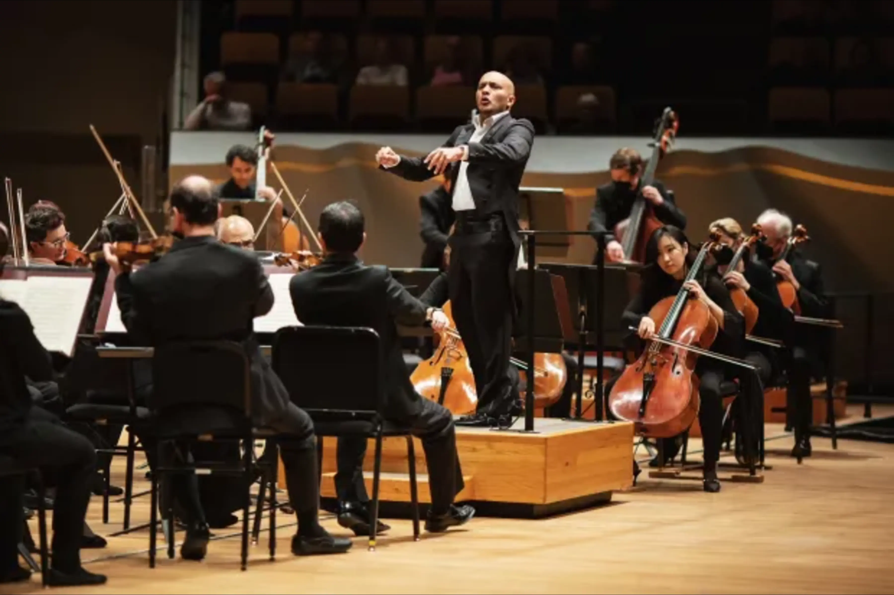
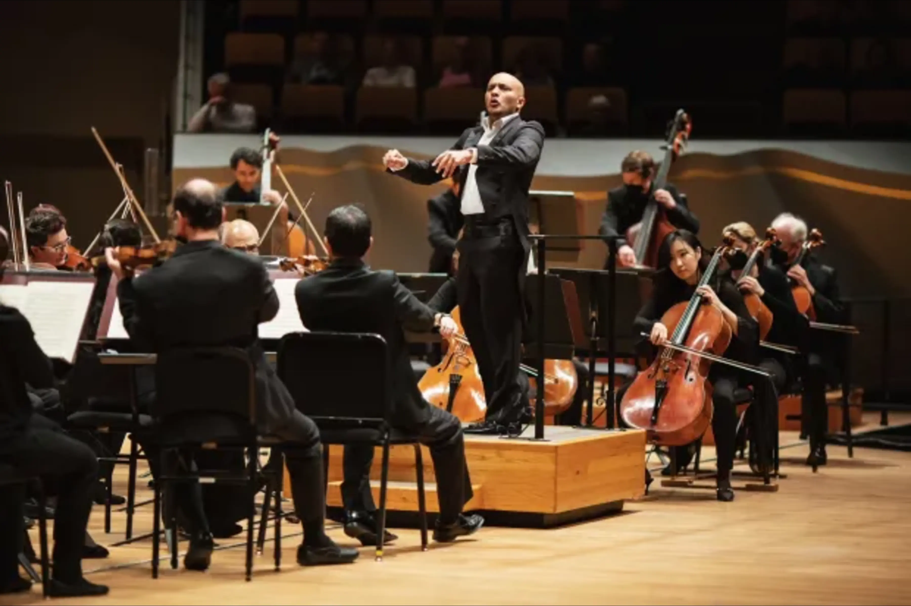

Colorado Symphony Classics 2022-2023
Our 2022/23 Season promises to be an imaginative and spectacular journey through some of the best music ever composed.
We’re delighted to present to you a season brimming with extraordinary talent and exciting repertoire that we hope will ignite your imagination. The Colorado Symphony is committed to bringing the best in live, symphonic music to an eclectic and ever-growing audience, and we’re well positioned to embark on an exciting path forward in the years to come.
Numbers
Vivaldi's The Four Seasons
OCT14-16 FRI-SAT 7:30 SUN 1:00
Symphonic bliss awaits you as your Colorado Symphony and guest conductor Aram Demirjian present a powerhouse program highlighted by Vivaldi’s programmatic masterpiece, The Four Seasons. As striking and admired as ever, this work conjures imagery that deftly captures the essence of spring, summer, autumn, and winter through music that manages to remain strikingly modern three centuries after its debut. Paul Huang is just the virtuoso to embrace this beloved concerto in its return to Boettcher Concert Hall. The grand finale — Tchaikovsky’s Fourth Symphony — is a meticulously structured meditation on fate that endures as one of his most popular and identifiable compositions. Over four movements, Tchaikovsky transforms his personal battle with fate into one of humanity’s most powerful works of art. Among today’s best and brightest composers, Jessie Montgomery’s Strum draws on the spirit of dance, movement, and American folk expressions in an ecstatic celebration that will have you on the edge of your seat.
Featured Artists: Aram Demirjian, conductor Paul Huang, violin
Repertoire: JESSIE MONTGOMERY Strum VIVALDI The Four Seasons, Op. 8, No. 1-4 TCHAIKOVSKY Symphony No. 4 in F minor, Op. 36
Beethoven Symphony No. 3 with Peter Oundjian
NOV 4-6 FRI-SAT 7:30 SUN 1:00
History is replete with turning points and with the completion of his revolutionary Third Symphony, Beethoven forever changed the idea of what a symphony could be. A clear bridging of the Classical and Romantic eras, the Eroica (“Heroic”) Symphony explores what it means to be human in a work that is larger and more emotional than a symphony had ever been before. In it, Beethoven’s passion rises to the forefront, using broad strokes of sound to convey the very nature of humanity, while reimagining a future for music filled with endless possibility. Cellist Sterling Elliott — a 2021 Avery Fisher Career Grant recipient — brings youthful energy to Elgar’s Cello Concerto, a deeply emotional work filled with soaring themes and quiet anguish that will leave audiences entranced. The Colorado Symphony Chorus takes center stage on Vaughan Williams ’Walt Whitman-inspired Toward the Unknown Region, a remarkable marriage of music and text, with Williams ’inspired music perfectly encapsulating Whitman’s noble, humanistic aspirations. These works will spring to life in the hands of Maestro Peter Oundjian and your Colorado Symphony.
Featured Artists: Peter Oundjian, conductor Sterling Elliott, cello Colorado Symphony Chorus, Duain Wolfe, director
Repertoire: VAUGHAN WILLIAMS Toward the Unknown Region ELGAR Cello Concerto in E minor, Op. 85 BEETHOVEN Symphony No. 3 in E-flat major, Op. 55 “Eroica”
Tchaikovsky Piano Concerto No. 1 with Olga Kern
DEC 2-4 FRI-SAT 7:30 SUN 1:00
Peter Ilyich Tchaikovsky — so highly regarded for his symphonic compositions — placed himself among the greats of the keyboard with the completion of his First Piano Concerto. The work is filled with towering grandeur, gorgeously lyrical melodies, and unmistakable Romantic spirit. For pianists what Everest is to climbers, the Concerto in B-flat has become the standard against which all virtuosos must measure themselves, featuring iconic opening flourishes and a pyrotechnics-filled finale. Denver favorite Olga Kern lends her dazzling technique and innate musicality to this cornerstone of the Classical Canon. Your Colorado Symphony and Conductor Christian Reif — dubbed a “remarkable talent” by the San Francisco Chronicle — conclude the program with Shostakovich’s stormy and brooding Tenth Symphony. Written to symbolize the power of the people, Shostakovich employs memorable themes and complex orchestrations that mirror his own battles against Soviet oppression. Ending on a triumphant note, this is a finale that will leave you breathless.
Featured Artists: Christian Reif, conductor Olga Kern, piano
Repertoire: TCHAIKOVSKY Piano Concerto No. 1 in B-flat major, Op. 23 SHOSTAKOVICH Symphony No. 10 in E minor, Op. 93